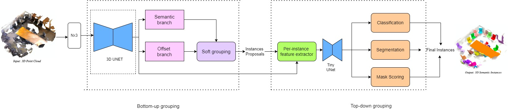
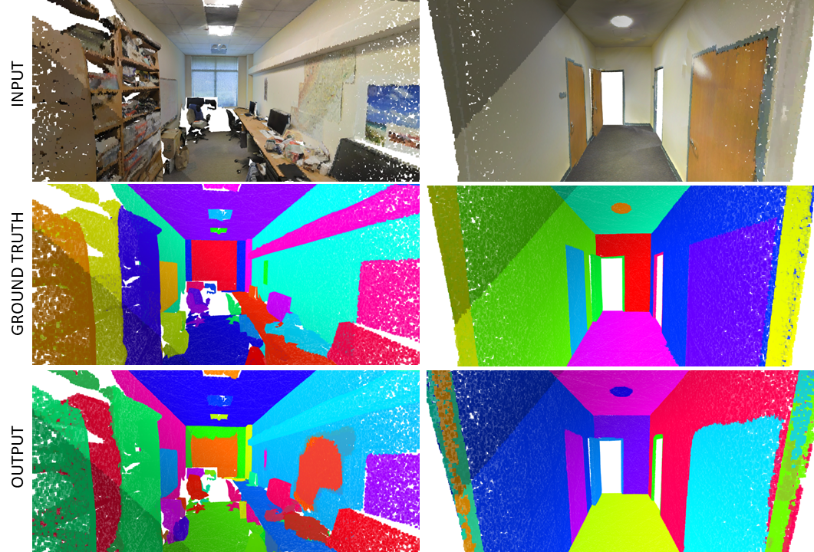

3D Point-Cloud Instance Segmentation
U-Net based deep learning architecture for instance segmentation of 3D point clouds
Python
PyTorch
PyTorch3D
Open3D
We proposed a U-Net-based deep learning architecture for instance segmentation of 3D point clouds. We devised an encoder capable of learning the global features of the point cloud.

